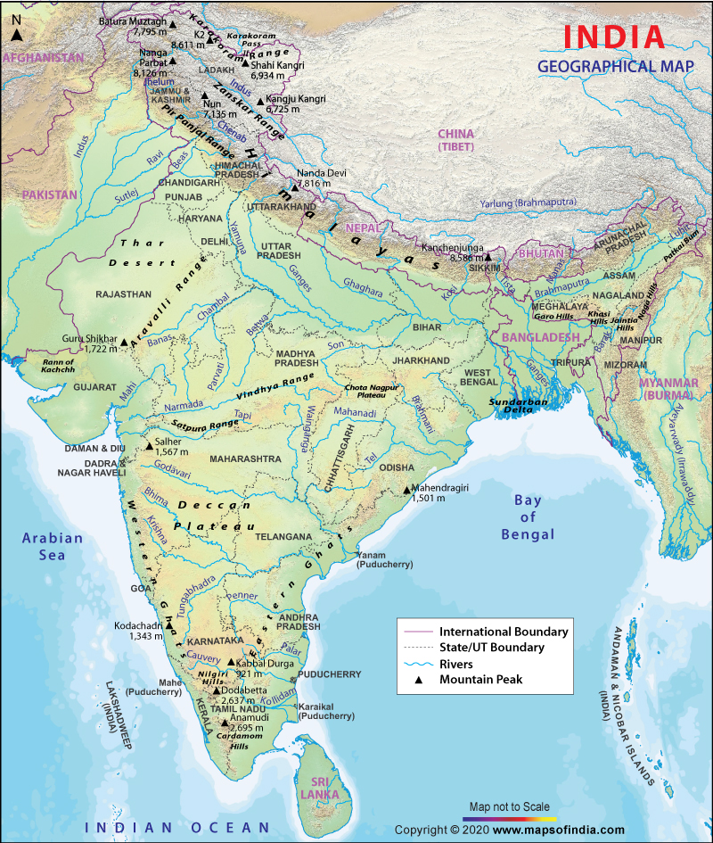
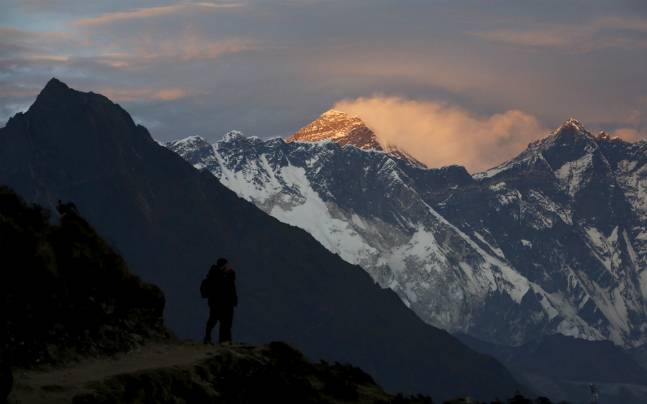
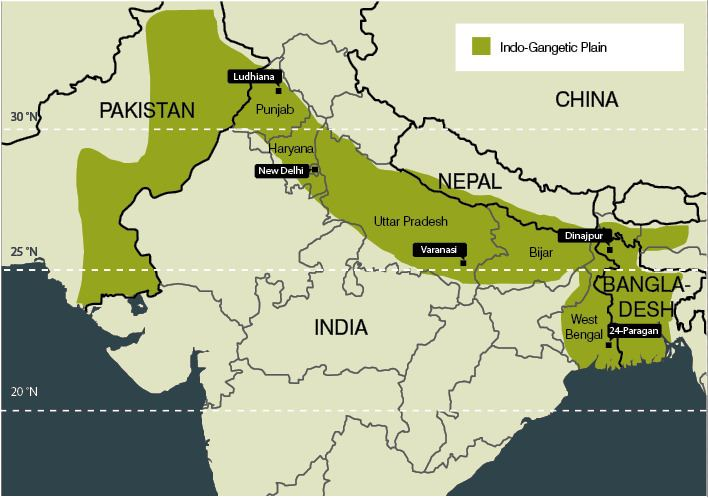
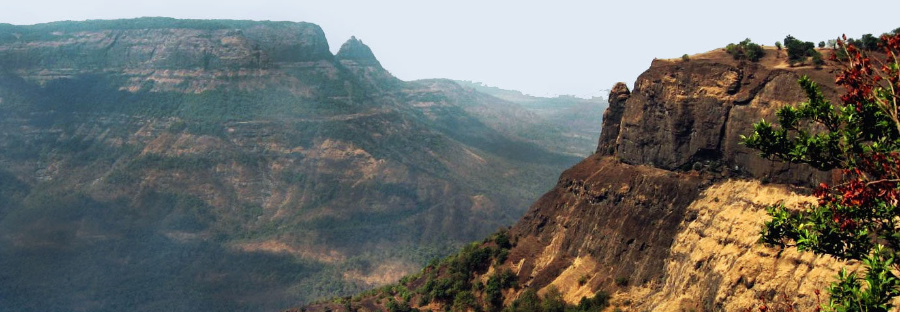
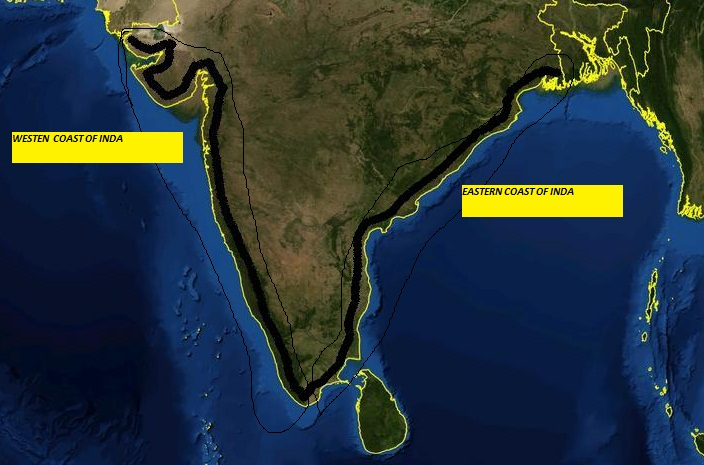
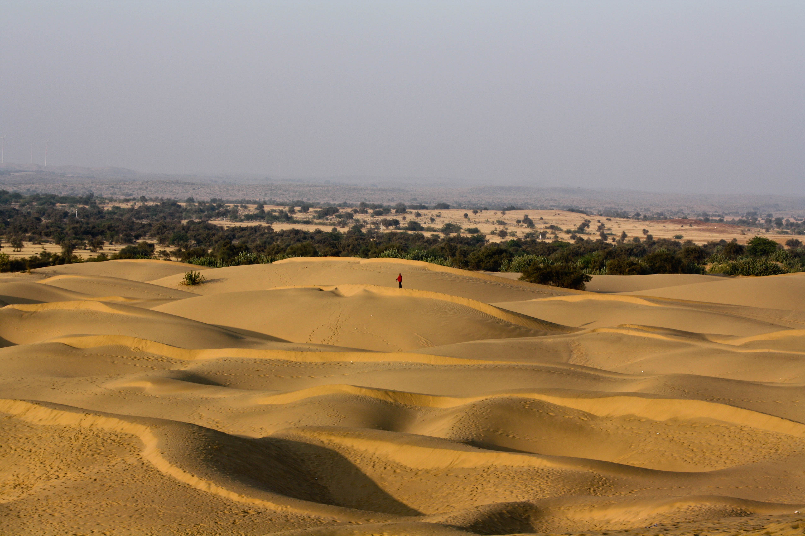
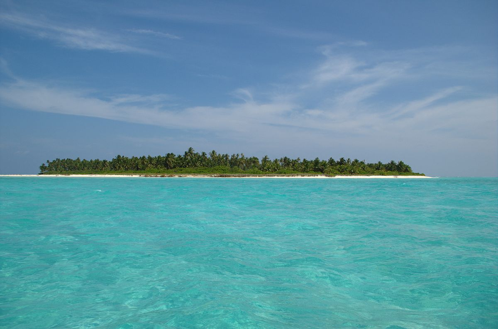
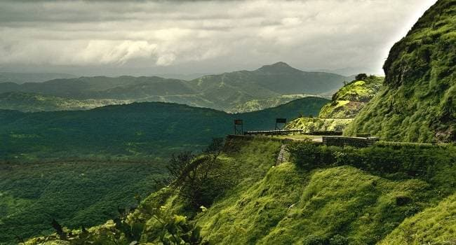
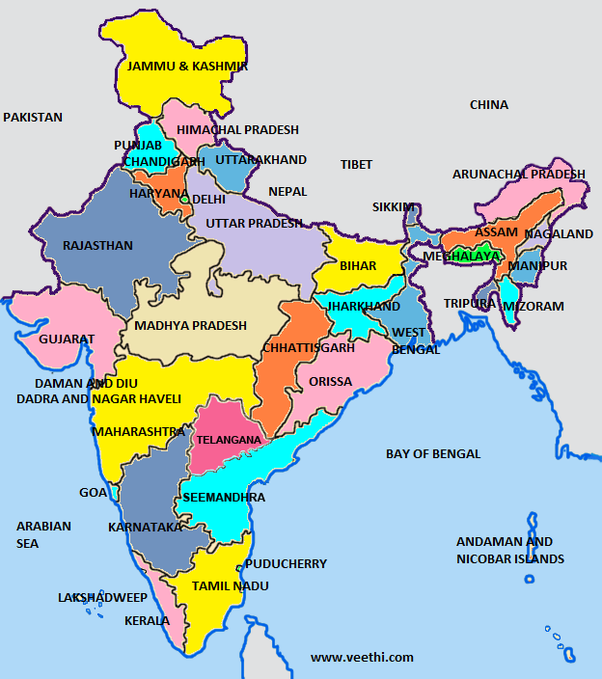

Geography of India
India is the seventh largest country in the world in terms of area. It lies on the Indian Plate, which is the northern portion of the Indo-Australian Plate. The Indian subcontinent is surrounded by three different water bodies and is easily recognisable on the world map.
Geographical Features
The country covers an area of about 3.28 million sq. km. The mainland of India extends between 8°4' and 37°6' N latitude and 68°7' and 97°25' E longitude. The Tropic of Cancer 23°30' N divides India into almost two halves. The total length of the coastline is 7,517 kilo meters. The Indian peninsula tapers southwards resulting in the division of the Indian Ocean into two water bodies - the Bay of Bengal and the Arabian Sea. In India, there is a great diversity of landforms such as lofty mountains, deep valleys, extensive plains, Plateau and coastal ghats, the desert and a number of islands.
Physiographic Regions
On the basis of its relief features, tectonic history and stratigraphy, India can be divided into several physical units.
The Great Mountains of the North:

India comprises the Himalayas in the North and North-eastern region, separating the country from the Tibetan plateau. The Himalayan region consists of three parallel ranges-
Himadri or Inner Himalaya or Greater Himalaya - are the most continuous range, contains the loftiest peaks, are perennially covered with snow and are a source of famous glaciers like the Siachen Glacier, the Gangotri and Yamunotri, etc
Himachal or lesser Himalaya - are home to great valleys like Kashmir Valley, Kangra Valley, Kullu Valley. The region is also known for hill stations like. Kullu,-Manali, Kufri, Shimla, Mussoorie, Nanital, etc.
Shivaliks or Outer Himalaya - extend through Pakistan, India, Nepal and Bhutan and are known for the 'Dun' valleys and Terai region. Dehra, Kothri, Chaukham, Patli and Kota.are the major duns found in the region.
These can be further divided into different ranges:
a.Pir Panjal Range: This is the largest range of the lower Himalayas and runs from the East-Southeast to west-northwest. The Pir Panjal pass lies to the west of Srinagar and comprises Banihal Pass, Sinthal Pass, Rohtang La, Munawar Pass and Haji Pir Pass.
b.Ladakh Range: This range extends from the northern side of Leh to the Tibetan border. It comprises Digar La Pass and Khardung La Pass. Considered a segment of the Karakoram mountain range, the Ladakh range has an extreme climate. Leh, which is the main town of the region, is regarded as a trade centre for fine pashmina wool.
c.Zanskar Range: This range starts from south-eastern boundaries of Kashmir and extends to the eastern limit of Baltistan. Singge La Pass, Runrang La Pass, Fotu (Fatu) La Pass, Marbal Pass and Zoji La Pass are some of the passes of this range.
d.Dhauladhar Range: This range rises from the plains of India to the north of Mandi and Kangra. Hanuman ji Ka Tiba or the 'White Mountain' is the highest peak.
e.East Karakoram Range: This range separates India from Central Asia and is also one of the larger ranges of Asia. It is home to the second highest peak of the world, K2.
Indo-Gangetic Plain:
The Indo-Gangetic Plain is also known as Indus-Ganga and the North Indian River Plain. It lies between the great northern mountain and peninsular plateau and is formed by three major rivers - the Ganges, the Indus, the Brahmaputra and their tributaries. It covers a large area of about 7, 00,000 sq. km in Northern and Eastern India. The plain is divided into three sections;

a. The Punjab Plains - major portion this is in Pakistan; formed by Indus and its tributaries- Beas, Chenab, Jhelum, Ravi, and Sutlej.
b. Ganges Plains - Haryana, Delhi, UP, Bihar, parts of Jharkhand and West Bengal lie in the Ganga plains. This is formed by the Ganga and its tributaries. It is the largest part of the Northern Plains.
c. Bhramaputra Plains- lie mainly in Assam built by Brahmaputra and its tributaries.
The Northern plains can be divided into regions viz.-
The Bhabhar Belt: It is a narrow belt that lies in the foothills of Himalayas and comprises of pebbles and rocks brought down by the streams. Rivers flow at very fast speed in this region.
The Terai Belt: It is located next to the Bhabhar region and is made up of newer alluvium, rich for cultivation, has thick forests.
The Bangar Belt: It forms the higher part of the plains and is made of older alluvium soil which is less fertile. This region of the Gangetic plains is covered by Laterite soil, rich in iron and aluminium deposits.
The Khadar Belt: It lies on the lowland areas beyond the Bangar belt and is made up of newer highly fertile alluvium brought down by the rivers. This region is flood prone.
The Peninsular Plateau:

The Peninsular Plateau is a tableland and its characteristic features include shallow valleys and rounded hills, made of igneous and metamorphic rocks. It has black soil which is known to originate from volcanic eruptions. It is broadly divided into two regions:
The Deccan Plateau: It is a triangular shaped plateau and is bounded by the Satpura range in the North,the Western Ghats in the West and the Eastern Ghats in the East. It slopes from West to East. Kaveri, Godavari and Krishna flow through it. It stretches across eight states of India and covers a total area of 1.9 million sq.
The Central highlands: This plateau consists of the Malwa Plateau, Chotanagpur Plateau, Meghalaya Plateau, Vidhya Range, Satpura Range and Aravali Range. Major portion is covered by the Malwa Plateau which is spread across parts of Gujarat, Rajasthan and Madhya Pradesh. Vindya ranges border it in the south and Arravalis in the Nort-west. Chambal River and its tributaries find their way in this plateau and Mahi, Son, Ken, Sind also flow through this region.
The Coastal Plains:

Coastal Plains span between the Arabian Sea in the West to the Bay of Bengal in the East. They are divided into two -
The Eastern Coastal Plains lie between the Eastern Ghats and the Bay of Bengal; and stretch from Tamil Nadu to West Bengal passing through Andhra Pradesh and Odisha. The rivers which flow through it are Krishna, Kaveri, Godavari and Mahanadi. The area between Krishna and Mahanadi Rivers (West Bengal and Odisha) forms the Northern Circas and the Coromandal coast lies between Krishna and Kaveri (Andhra Pradesh and Tamil Nadu) The Western Coastal Plain is sandwiched between the Western Ghats and the Arabian Sea and extends from Gujarat in the north and covers the regions of Maharashtra, Goa, Karnataka and Kerala. There are numerous rivers and backwaters in this region. It is divided into four parts -- Konkan coast (Mumbai, Goa), the Malabar Coast (Kerala), the coast of Gujarat and the Kannada plains.
The Indian Desert/ Thar Desert:

Covering an area of 200,000 square miles, Thar is India's only desert. The Thar Desert also known as the 'Marusthal', is the 18th biggest desert in the world. It covers a large part of Rajasthan and extends to Gujarat, Haryana and Punjab. It covers over 60% of the geographical area of Rajasthan and also extends to Pakistan where it is known as Cholistan Desert. Luni is the only river in this desert and it receives very little rainfall. Major portion of this desert consists of craggy rocks, sand dunes and compacted salt-lake bottoms. The speedy winds that flow with significant force lead to regular soil erosion. It has an arid climate and the vegetation is scanty. The salt marsh located in Kutch, Gujarat known as the Great Rann of Kuchchh falls into this desert.
The Islands:

India has two major groups of islands which are also classified as Union Territories - the Andaman and Nicobar Islands (Bay of Bengal), and the Lakshadweep Islands (in the Arabian Sea). Lakshadweep covers an area of 32 sq. km. It has a total of about 35 coral islands and islets rich in flora and fauna. The Andaman and Nicobar Islands are larger in size and comprise 572 islands. Andaman is located in the north and Nicobar is located in the south. Located close to equator they experience equatorial type of climate and also have thick forest cover. Barren Islands of Andaman is India's only active volcano.
Some of the other important islands in India are Daman and Diu (by the state of Gujrat), Majuli (river island in Brahmaputra, Assam), Salsette Island (is an island in Maharashtra) and Sriharikota (Bay of Bengal).
Major Mountain Ranges in India:

The Himalayan Range: This is the world's highest mountain range and the tallest peak. Mt. Everest is also a part of this range. Translated from Sanskrit, the name means 'Abode of snow'. Many great rivers originate here. It is the youngest range and is termed as the 'New fold Mountains'. It acts as a barrier against the frigid Katabatic winds which flow down from Central Asia and protect India from its effects.
Purvanchal or Patkai Range: Also known as the Eastern mountain Range, is an extension of the Himalayan Range. It can be divided into three regions, the Patkai-Bum hills (on North-eastern India-Burma border) Garo-Khasi-Jaintia in Meghalaya, Lushai hills or Mizo hills. This range covers all the eastern states of India, commonly known as the Seven Sisters.
Karakoram and Pir Panjal Range: It lies in Jammu and Kashmir and comes under the disputed area between India and Pakistan. It comprises of more than 60 peaks. K2, the second highest peak of the world, is also a part of this range. Besides, the Hindu Kush (runs in Afganistan), Siachen and Biafo Glacier (Gilgit Baltistan, Pakistan) also form a part of this range. The Pir Panjal also known as lower Himalayas is home to rivers Ravi, Chenab and Jhelum. This also is an area of dispute for India and Pakistan.
Shivalik Hills: The literal meaning of Shivalik is 'tresses of Shiva'. It extends from Arunachal Pradesh through Bhutan to West Bengal and from Kashmir to Uttarakhand and Himachal Pradesh. Jammu, Kangra and Vaishno Devi are a part of this range. Also known as Outer Himalayas, it was known as Manak Parbat in ancient times.
Satpura and Vindhya Range: These ranges run parallel to each other and spread across Central India across 1,050 km. Both ranges lie mainly in Madhya Pradesh and Maharashtra with some extension to Gujarat, Chattisgarh and Uttar Pradesh. Famous tourist spots like Panchmarhi Hill Station, Kanha National Park, Amarkantak and Omkareshwar temple are part of this region. It is believed to be formed from the Aravalli Mountains. Due to its geographical location in central India, it separates Northern and Southern India.
Aravalli Range: This is India's oldest mountain range and spreads across the parts of Rajasthan, Delhi and Haryana. The word Aravalli translates to 'Line of Peaks' Guru Shikhar in Mount Abu is the highest peak of this range, which rises to 1,722 m.
Western Ghats: Western Ghats are also known as Sahyadri Mountains and run parallel to Indian peninsula's western coast. Running from Gujrat to Kanyakumari in south India, it comprises of the Nilgiris, Anaimalai (Kerala) and Cardomom mountains. Tourist attractions include Jog falls, Ooty, Bandipur National Park.
Eastern Ghats: Called Purva Ghat is a discontinuous range of mountains which run along the eastern coast of India parallel to Bay of Bengal. The rivers Godavari, Mahanadi, Krishna and Kaveri create a large fertile region here which is suitable for crops like rice. Important cities located in Eastern Ghats are Vishakhapatnam and Bhubaneswar.
States and Union Territories:

Spread over an area of 3,287,263 sq. km, India comprises of 29 states. The largest state in India is Rajasthan. It covers an area of 3,42,239 sq. km and shares its borders with Punjab, Haryana, Uttar Pradesh, Madhya Pradesh, Gujarat and the Pakistani provinces of Punjab and Sindh.
Goa is the smallest state in India comprising an area of 3,702 sq. km. The state is located to the South-west of India. Uttar Pradesh, lying to the North-east of the country, is the most populous state. Gujarat, lying on the extreme West of the country, is one of the most prosperous of all Indian states. The strikingly beautiful Jammu and Kashmir is the Northernmost state in the country. India's Eastern part comprises the states of Manipur, Meghalaya, Assam, Mizoram, Nagaland, Tripura and Arunachal Pradesh. There are seven union territories in India. Delhi, the capital of India, also fell in this category till 1991 (now National Capital Territory). The other union territories of the country include Chandigarh in the north; Dadra and Nagar Haveli and Daman and Diu in the west; Lakshadweep in the southwest; and Puducherry and Andaman and Nicobar Islands in the southeast of the country.